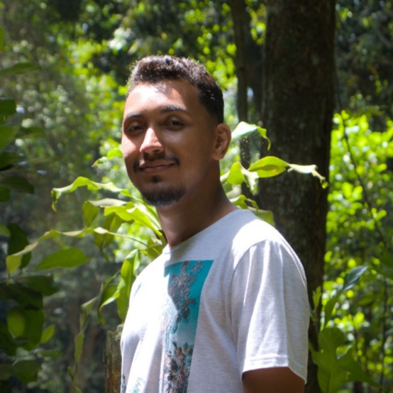
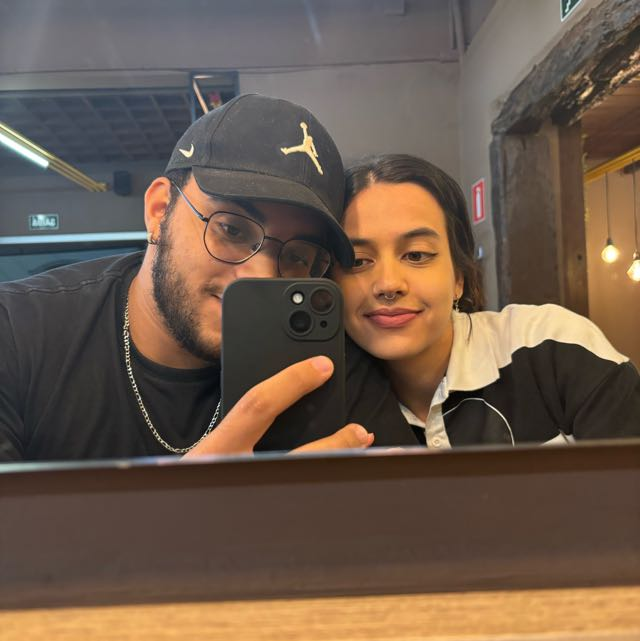
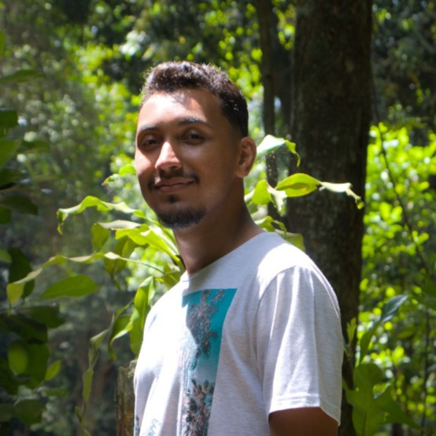
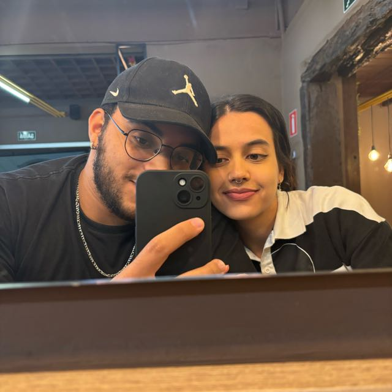

Desenvolver este projeto sobre os biomas do Brasil foi uma experiência desafiadora e, ao mesmo tempo, extremamente
recompensadora. Ao longo desse percurso, disciplinas como Banco de Dados, Engenharia de Software e Programação Web II foram essenciais
para transformar uma ideia em uma aplicação funcional e bem estruturada.
Com PostgreSQL, pude compreender a importância de um banco de dados bem modelado, garantindo que todas as informações sobre biomas,
usuários, posts e comentários fossem armazenadas de maneira eficiente. A Engenharia de Software trouxe organização e clareza ao projeto,
ajudando a estruturar um backend sólido em Node.js com Express, onde cada parte do sistema foi planejada para ser escalável e fácil
de manter.
Já no frontend, a disciplina de Programação Web II mostrou o poder do HTML, CSS e JavaScript na criação de uma interface
dinâmica e interativa, permitindo que o mapa do Brasil em SVG se tornasse uma ferramenta intuitiva e informativa.
Foi um caminho cheio de desafios, bugs inesperados e noites ajustando código, mas cada obstáculo superado trouxe uma nova lição.
A mistura de teoria e prática tornou esse projeto não apenas um exercício acadêmico, mas uma jornada instigante e educativa, provando
que a persistência e o aprendizado contínuo fazem toda a diferença. No final, ver tudo funcionando trouxe uma satisfação indescritível,
mostrando que, apesar das dificuldades, o processo de desenvolvimento é tão enriquecedor quanto o próprio resultado.
 


